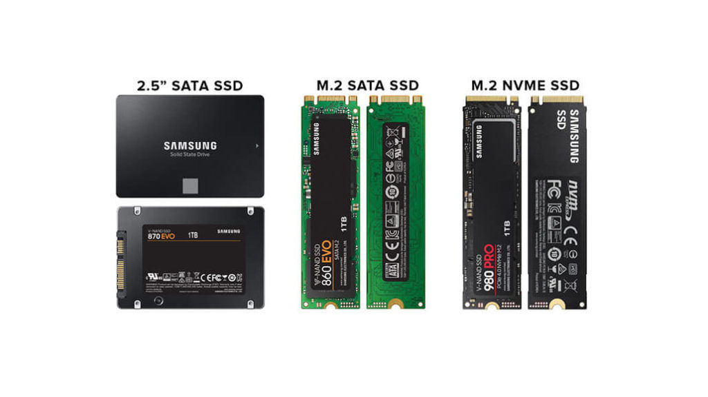

NVMe SSD diskovi znatno ubrzavaju pokretanje sustava

SSD disk je jedna od nadogradnji koja se najviÅ¡e osjeti u svakodnevnom radu raÄunala.
NVMe modeli koriste brže suÄelje i posebno su korisni za pokretanje sustava, igara i većih programa.
Za većinu korisnika dovoljno je 1 TB prostora, ali za igre i video datoteke brzo se potroši i više.